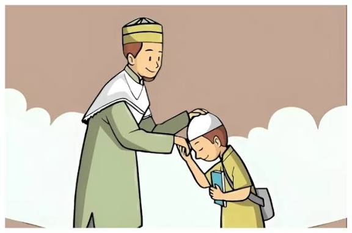
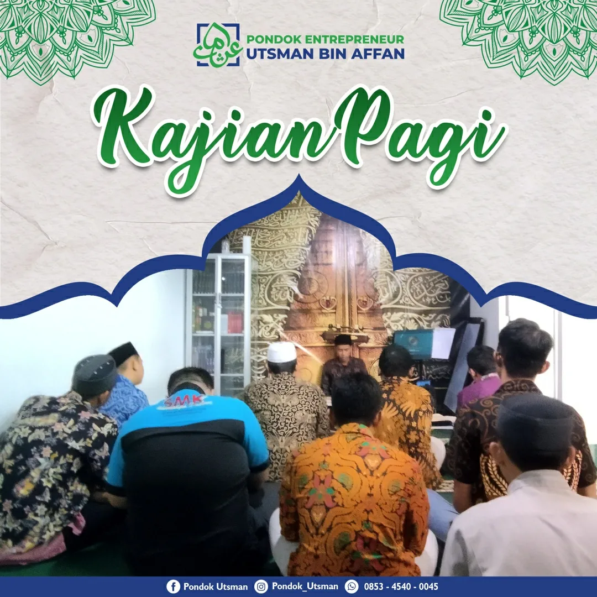
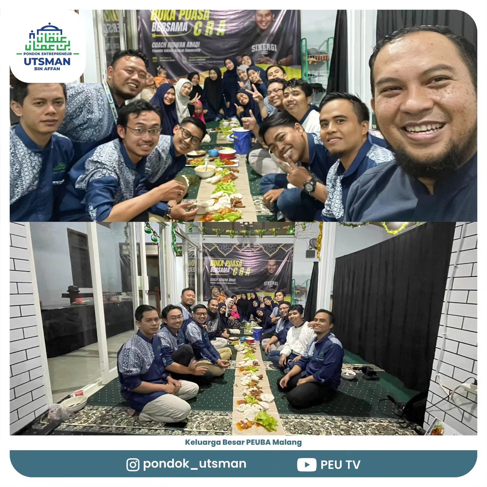
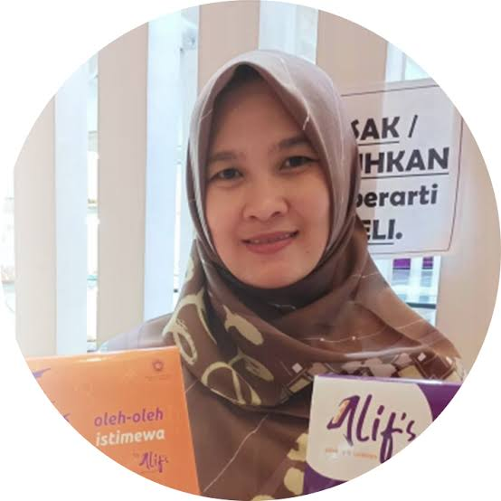
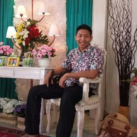
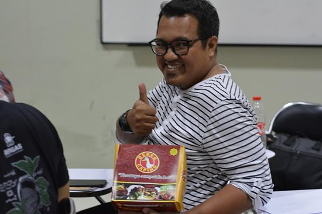
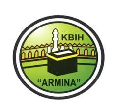

Ilmu, Adab & Akhlaq Islami
Membina ilmu, adab, dan akhlak Islami sebagai bagian penting dalam pendidikan dan pembentukan karakter.
Mencetak Dai Technopreneur yang siap menghadapi perubahan zaman, menjadi agen perubahan peradaban, serta memberikan manfaat bagi umat.
Pondok Pesantren Masjid Utsman Bin Affan (PPM-UBA) merupakan pusat pendidikan yang memiliki misi mencetak Dai Technopreneur yang siap menghadapi perubahan zaman dan menjadi agen perubahan peradaban.
Melalui pendidikan Islam, pembinaan adab, pengembangan kepemimpinan, kewirausahaan, serta teknologi digital, Pondok Utsman berupaya memberikan manfaat bagi umat.
Selengkapnya tentang kami →Perjalanan Pondok Utsman merupakan bagian dari ikhtiar membangun pendidikan Islam yang bermanfaat bagi masyarakat dan umat.
Berdasarkan informasi pada website resmi, pengembangan pesantren di Desa Liman Benawi berkaitan dengan perintisan TPA di serambi Masjid Al Hikmah dan pengembangan Pondok Pesantren Modern Utsman Bin Affan.
Pada 8 Agustus 2021, peletakan batu pertama Pondok Entrepreneur Ummat juga menjadi bagian dari upaya pengembangan pendidikan dan pemberdayaan ekonomi umat.
Pelajari profil pondok →Empat bidang utama yang mendukung pembinaan keislaman, pengembangan karakter, kepemimpinan, dan keterampilan digital.

Membina ilmu, adab, dan akhlak Islami sebagai bagian penting dalam pendidikan dan pembentukan karakter.
Mendukung pembelajaran Al-Qur'an dan Hadis sebagai landasan dalam kehidupan dan pembinaan keislaman.
Mengembangkan jiwa kewirausahaan, kemandirian, tanggung jawab, dan kepemimpinan.
Mengenalkan teknologi informasi dan keterampilan digital sebagai bagian dari pengembangan potensi santri.
Dokumentasi kegiatan pendidikan, keagamaan, pembinaan, dan kebersamaan di lingkungan Pondok Utsman.

Dokumentasi kegiatan pembelajaran dan pengembangan keterampilan.

Dokumentasi kegiatan kajian dan pembinaan keislaman.

Dokumentasi kebersamaan dalam kegiatan Pondok Utsman.
Kami mengajak para donatur dan seluruh umat Muslim untuk bersama-sama mendukung ikhtiar pendidikan dan pemberdayaan umat melalui Pondok Utsman.
Hubungi Admin untuk DonasiDapatkan informasi pendaftaran untuk lokasi Malang dan Lampung melalui halaman pendaftaran.
Semoga setiap dukungan menjadi amal jariyah yang memberikan manfaat bagi umat.

Owner Alif's Bakery
Owner Ayam Goreng Nelongso

Owner Kotagede Jewellery

Owner Seblak Asgar
Owner Audina

Kota Malang